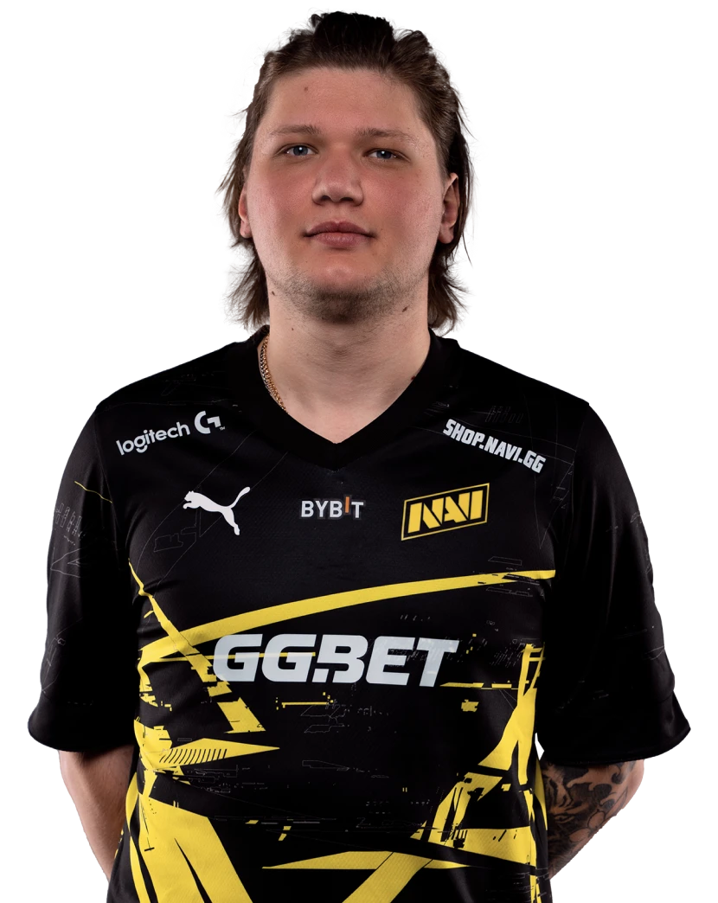
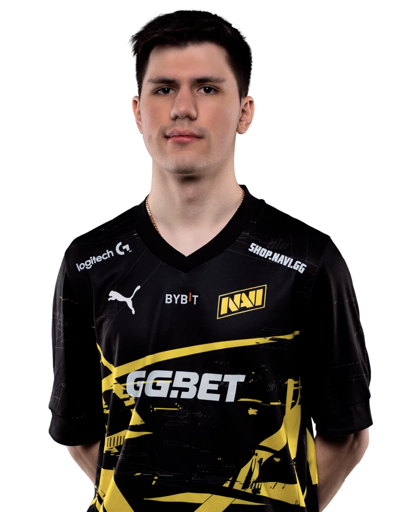
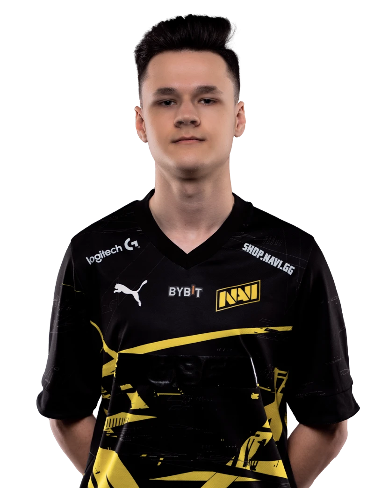
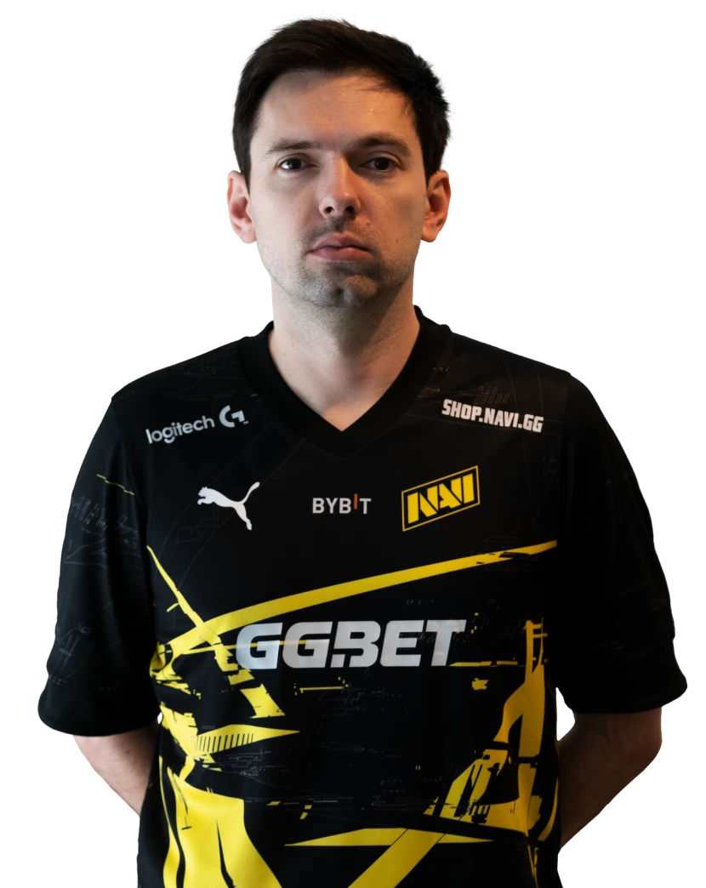

СКЛАД КОМАНДИ:

s1mple(Олександр Костилєв)
Україна, 25 рокiв
s1mple — найяскравіша зірка світової сцени CS:GO. Перейшов у NAVI в 2016
році і з того часу виграв понад 10 турнірів, включно з PGL Major
Stockholm 2021. Тричі потрапляв у трійку найкращих гравців року за
версією HLTV. У своїй колекції має 17 медалей MVP. Зіграв за Народжених
Перемагати більш ніж на 1000 карт.

b1t(Валерiй Ваховський)
Україна, 20 рокiв
Першим серйозним досягненням b1t стала перемога у відкритій кваліфікації
CIS Minor Championship — Berlin 2019 із командою NOTBAD. Потім Валерій
взяв участь у проекті NAVI Esports Camp: він демонстрував чудову гру і
одним із перших отримав запрошення до NAVI Junior. Наприкінці 2020 року
b1t став шостим гравцем команди Natus Vincere з CS:GO. Спершу він
виступав замість flamie на Inferno, а вже наступного року став
повноцінним гравцем основного складу. Валерій славиться своїми хедшотами
та знову підтвердив це на PGL Major Stockholm 2021, де показав найбільшу
середню кількість хедшотів за раунд, а також поставив рекорд за всю
історію Major-турнірів за цим показником.

npl(Андрій Кухарський)
Україна, 17 рокiв
Молодий і талановитий гравець, який доєднався до академії NAVI у віці 16
років завдяки своїй грі на FACEIT. У складі NAVI Junior виступав на 4
турнірах серії WePlay Academy League. Шостий сезон змагань у Академічній
лізі закінчив із рейтингом 1,26. Завдяки індивідуальним ігровим навичкам
отримав можливість спробувати себе в основному складі команди з CS:GO. З
npl наша команда посіла 5-6-те місце на BLAST World Finals та 3-тє-4-те
місце на IEM Katowice 2023.

B1ad3(Андрій Городенський)
Україна, 36 рокiв
!ТРЕНЕР!
!ВСІ ІНШІ ГРАВЦІ КРАЇНИ АГРЕСОРА!
росія